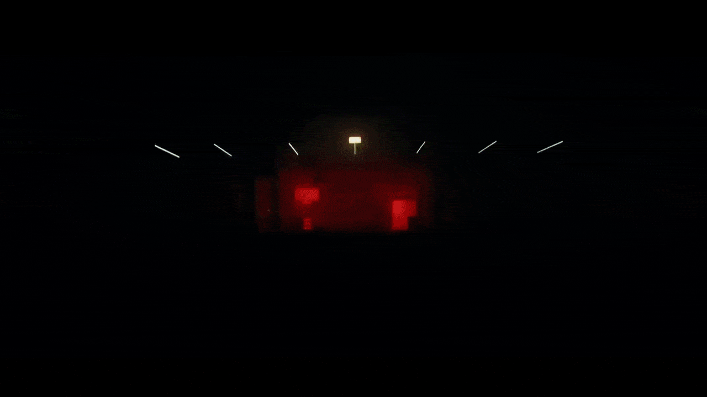
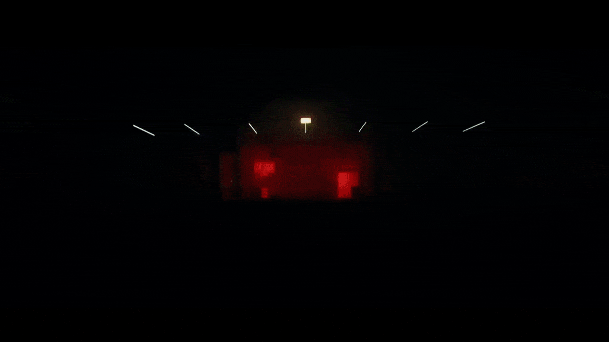

PROJECTS
I have a passion for creating animated and interactive websites and enjoy trying to create unique and interesting websites that will provide users with memorable user experience. I mainly gravitate towards frontend development, usually working with GSAP, Threejs, HTML5 and CSS3.
IF you like what you see, I can help you build your website from scratch or just add some cool ui effects using GSAp, Threejs or just plain Javascript.
Feel free to reach out for any inquiries.